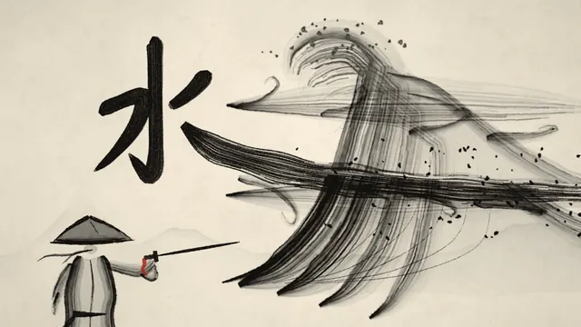
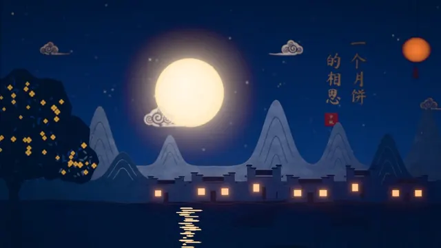
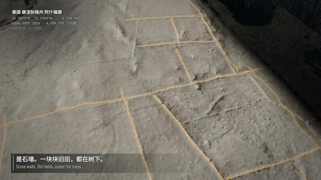
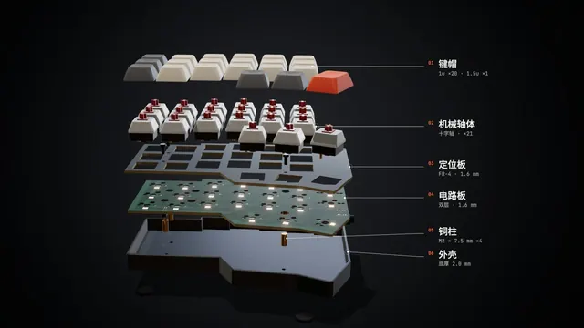
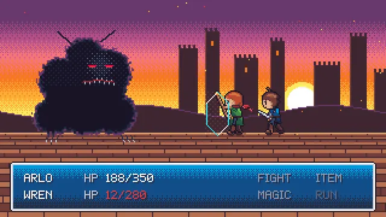
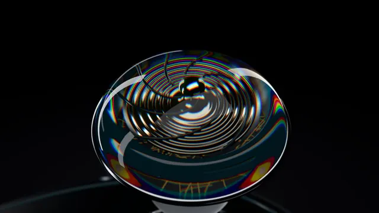
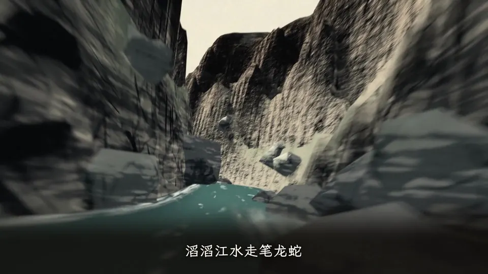
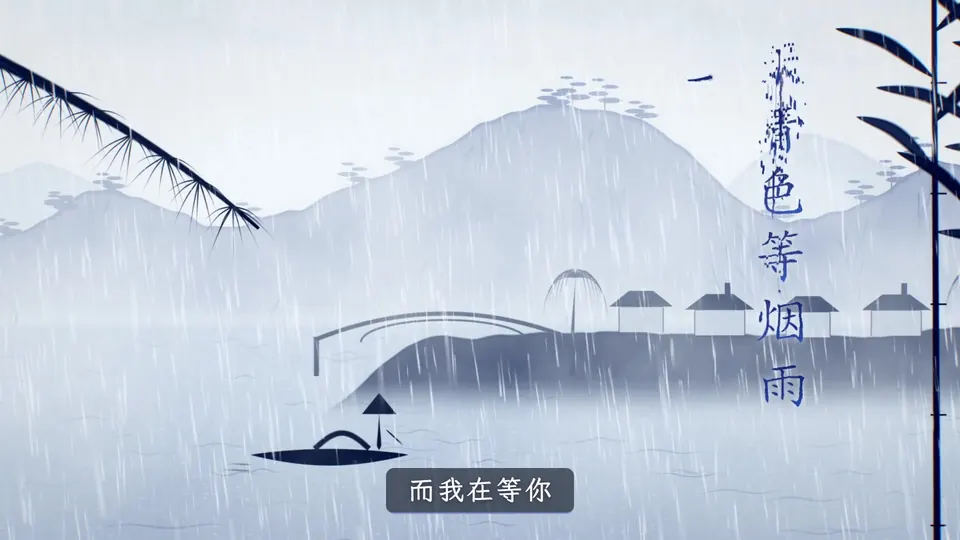
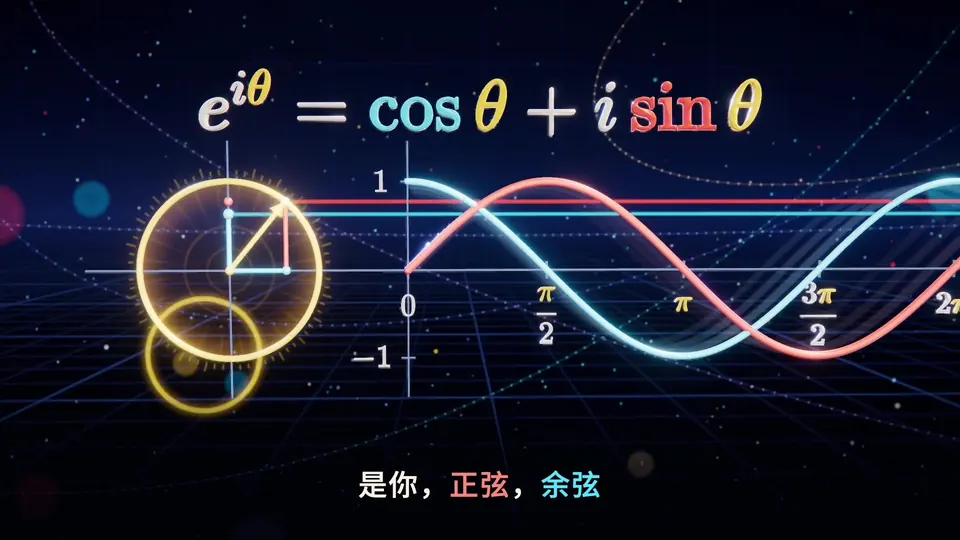

一句话：它是什么
chaojifeng-video-design 是一个装进 Agent（README 以 Codex 为例，任何支持 SKILL.md 的 Agent 均可，比如 Claude Code）的视频设计 Skill：你给主题、产品或素材——最简单的情况只给一首音乐——Agent 按它的方法把内容变成可修改的分镜与制作计划，再组织镜头、文字、旁白、音乐和节奏，最后完成预览、审片、返修与成片交付。它本身不附带渲染器，渲染、配音、导出依赖宿主 Agent 环境已有的工具（HTML/Canvas、Remotion、Three.js、Blender、FFmpeg 等）。
README 给出的规模：8 类视频任务、66 套风格、59 条随库样片、12 项基础动效、64 项表达指导、18 类组合配方。其中 7 套基础风格为作者自有，59 套影片风格、代表帧与样片集成自 LemoLab 的 Lemo-Opuscar（本站另有 Lemo-Opuscar 合集页）。
作者与传播
作者超级峰在 X（@Mileson07）自述为 AI 独立创作者、前 toB 产品总监。相关帖子（时间为新加坡时间 SGT）：
- 2026-10-20 17:16 · 开源帖：认为模型做视频已很强，但知识科普内容越来越同质化，这个 Skill 想解决“怎样一个提示词就做出更有情绪感、沉浸感的视频”。
- 2026-10-26 11:28 · 新一期 AI 视频（约 5.5 万次浏览）：配视频展示用该 Skill 做的作品。
- 2026-10-27 10:20 · “不到一天破 100 星”；同日 18:37 琵琶行帖称“我就给了它一个音乐《琵琶行》”，20:32 MV 级视频帖称“就给了一个背景音乐文件而已”。
- 2026-10-28 10:06 · 回复网友：GPT、Claude、Kimi 等模型都可以配合这个 Skill 做出来。
“只给一首音乐就出片”是作者的宣传表述；仓库自己的文档更克制：结构检查只说明结构成立，画面、听感、事实与观众理解需要分别验收（见下文“局限”）。
核心理念：先导演，后特效
SKILL.md 的第一句就是整个项目的纲领：
先决定观众要理解或感受到什么，再组织镜头、素材、文字与声音。故事属于当前题材，风格提供材质和表达语法，实现由实际可用工具完成。
由此展开的几条设计原则（本站归纳）：
- 三层分离：导演与计划（观众变化、镜头任务、声音、整片排程）／风格包（材质、颜色、文字、运动、镜头、声音）／实际制作路线（已有引擎、录屏、合成或生成工具）。风格包“不自动成为渲染器”。
- 观众所得优先：每个场景都写成“怎样组织内容 → 观众所得”，例如产品演示 = 真实任务 → 关键操作 → 结果证据 →“看懂产品能做什么”。
- 每镜都要说清：新增信息或感受、焦点、揭示顺序、稳定阅读窗、下一镜接力；相机移动要服务揭示、关系或情绪，不凑运镜数量。
- 声音共同设计：确定主声、动机、能量起落与静默；音乐、旁白或任务都可以领拍，但不把所有变化锁到每一拍；有旁白／歌词时取得真实音频再排时间。
- 统一时钟：画面、音效、旁白、字幕从同一份排程派生，使用整片绝对秒与稳定 ID；顺序／倒序／随机 seek 实测一致才能声称可重复。
- 事实镜头找真证据：先找真实产品、原始照片、录像、档案与数据，无法成立就换镜头或收缩主张。
- 诚实验收：“未看、未听、未做观众测试的项目保持未验证”，候选版本不能继承旧版或上游案例的通过状态。
页首封面图即仓库示意图 assets/diagrams/scenario-routes.png（MIT）：同一套方法（元素 · 规则 · 配方 · 流程），按八类场景走不同链路。

能力地图：任务 × 风格 × 配方 × 表达
README 的说法是：“场景决定要完成的任务，风格决定材质与视觉语言，配方安排整片内容，表达和动效处理局部。”
| 层 | 数量 | 内容 |
|---|---|---|
| 视频任务（场景） | 8 | 产品演示、知识讲解（含概念科普、说唱科普）、资讯呈现、图片成片、故事视频、功能动效、品牌形象短片、音乐与视觉表演 |
| 风格包 | 66 | 7 套基础风格（清晰产品、纸面编辑、暗色技术、单色图解、影像叙事、鲜明拼贴、双底色发布片）+ 59 套 Lemo-Opuscar 影片风格（剪辑纪实、实证影像、手绘、东方传统、版画、图形排版、信息发布、卡通、游戏、电影时代、材质 3D 共 11 类） |
| 组合配方 | 18 | 如“用真实任务证明产品价值”“逐层递进讲清抽象概念”“证据板讲清资讯”“发布片情绪弧”“嘻哈知识科普”等，含输入、镜头步骤、表达组合、检查问题 |
| 表达指导 | 64 | 叙事、镜头、转场、视觉、动画、文字、声音、交互、风格统一、制作组织、知识表达 11 类 |
| 基础动效 | 12 | 出现、离场、强调、路径描绘、建立关系、数值变化、状态替换、镜头聚焦、遮罩切换、逐项呈现、层间视差、稳定停留 |
部分集成风格的代表帧（来自 LemoLab · Lemo-Opuscar，CC BY 4.0；由本站转为 webp）：






完整 66 套风格可在附录 README 的风格表、或仓库内离线画廊 assets/gallery/index.html（需完整下载仓库）中浏览、筛选与并排对比。
招牌工作流：音乐驱动三维世界
这是作者在 X 上主推的玩法：音乐 + 主题 + 风格 三项输入，默认约 60 秒、1080p、30fps。README 给出的提示词模板：
用 $chaojifeng-video-design 做一支音乐驱动的三维视频。
音乐：【音乐文件或链接】
主题：【要表现的对象或讲清的关系】
风格：【水墨、烟雨、诗词意象、理论概念或自己的风格描述】
直接完成成片和可编辑工程。按 references/music-driven-world.md，流程大致是：
- 核音轨：核对哈希、长度，回听候选区间，选有发展、释放与收束的连续乐段；有歌词就取得实际唱词量时。
- 分析只出候选：
music_world.py analyse用 FFmpeg + Python 标准库生成粗频带、RMS 与候选起音；“候选不是已核实节拍或乐句”。 - 选贯穿对象：例如墨滴 → 山体 → 河道；青蓝笔触 → 器物纹样 → 烟雨空间；点与向量 → 投影 → 曲线。新题材重新定义。
- 编排事件阶段：预备 ≤ 触发 ≤ 峰值 ≤ 落定 ≤ 停留（prepare / trigger / peak / settle / hold_until），写入
score.json，渲染读同一份数据。 - 两条起步工程：Three.js + Remotion（可计算几何、公式、快速重排）与 Blender + Remotion（器物、地形、材质），位于
assets/music-world/starter。 - 先锁音乐与关系，再调外观：每个外观层可独立关闭做同镜对照，“不能靠加亮、加密、加颗粒替代内容”。
- 实测验收：核对导出片中的接触、峰值、落定和停顿；机器时刻、抽帧、连续观看、听审和观众理解分别登记。
python3 SKILL_ROOT/scripts/music_world.py init --music /project/song.wav --theme "潮汐与月引力" --style 理论概念 --into /project/tide
python3 SKILL_ROOT/scripts/music_world.py analyse --project /project/tide
python3 SKILL_ROOT/scripts/music_world.py validate --project /project/tide作者的四段原创音乐视觉作品（封面帧截图；视频本身托管在 GitHub，本站未转存。片中歌曲权利归各自权利人，案例视频不在 MIT 范围内）：



安装与使用
安装
把仓库克隆到 Agent 能加载 Skill 的目录。README 以 Codex 为例：
git clone https://github.com/mileson/chaojifeng-video-design.git ~/.codex/skills/chaojifeng-video-design其他支持 SKILL.md 的 Agent 放到对应 Skill 路径即可。以 Claude Code 为例（本站补充，非 README 原文），通常可放在 ~/.claude/skills/chaojifeng-video-design（个人）或项目内 .claude/skills/，保持相对目录结构。注意：仓库带 59 条样片与 4 段作品视频，完整克隆体积在 1 GB 量级；只想要方法和脚本可考虑浅克隆。
调用
在 Agent 中写 $chaojifeng-video-design 并描述目标，例如：
- “用 $chaojifeng-video-design 做一期关于【主题】的概念知识科普视频，一次性完成。”
- “为这个产品制作一条 30 秒竖版介绍视频。使用项目中已有的截图和素材，先确认要证明的任务……”
- “只修改第 3 个镜头，让操作结果更容易看清，并复验相关字幕和声音落点。”
- “我只需要分镜方案。请先核实 TCP 三次握手的事实，再用逐层递进的画面解释。”
两种节奏：明确说“一次性完成 / 直接成片”（direct）时，Agent 连续完成制作、内部检查与返修；要求分阶段审阅（staged）才在约定节点停下。
本地工具
查询与校验脚本只用 Python 3.10+ 标准库；媒体探测需要 FFmpeg / ffprobe：
python3 scripts/catalog.py --kind scenario list
python3 scripts/stylepacks.py resolve 中国水墨
python3 scripts/stylepacks.py init brand-ink --into /project/video/styles --extends opuscar-ink-wash
python3 scripts/validate_plan.py examples/product-demo.plan.json
python3 scripts/check_delivery.py plan.json delivery.json --probe --require-video从计划到成片：六步流程
据 references/production-workflow.md：
- 定主线和导演意图：观众起点 / 终点、贯穿线、真实依据；“科技感”要落实到具体视觉与听觉选择。
- 写镜头任务与可编辑计划：按计划合同（plan.json），时间用整片绝对秒，镜头 / 对象 / 节拍 / 旁白 / 素材有稳定 ID。
- 落实素材与时间：优先用户素材与真实证据，缺了先联网找原始来源并记录权利与取舍。
- 声画一起排练：先写各段情绪与职责再选曲；音效多时先写事件表，渲染后用
audio_event_audit.py核对。 - 按约定节奏制作：看首帧、最密帧、关系落定帧、转场边界与连续播放。
- 审片、导出、交付：保存源、视频与交付记录（delivery.json），已知错词、字幕错位先返修，不以“披露缺陷”代替满足要求。
示例与案例
- 计划示例（
examples/）：品牌短片、产品演示、知识讲解、资讯简报、音乐视觉、TCP 三次握手、证据板等十余份*.plan.json，可直接用validate_plan.py校验。 - 成片案例（examples/showcase）：音乐视觉 4 段（水墨山河、青花烟雨、琵琶江月、三维数学世界，均 15 秒高亮）、说唱知识解说《AI 闯关记》约 18.6 秒、音乐产品解说《小圆角》22 秒竖屏。
- 评测题（
evals/）：知识科普、说唱、发布片、产品音乐叙事等创作评测，README 标注为“尚未执行”。
局限与注意
- 不是渲染器：仓库是方法、合同、目录、模板和检查脚本；能否出片取决于宿主 Agent 的工具、模型与算力。
- 检查 ≠ 质量：README 明说“检查通过只说明对应结构或测量条件成立”；分析工具产出的是候选节拍，不是已核实的乐句。
- 评测未执行：
evals/的题目尚未跑过；data/memory.md记录的是工程验证（导出、seek 检查），作者注明“不代替新主题的视听与理解检查”。 - 素材权利分层：代码与文档 MIT；Lemo-Opuscar 样片与代表帧 CC BY 4.0（三条移除了受限音轨）；作者的作品案例视频“不纳入 MIT 许可”，转载改编需取得许可；片中歌曲归原权利人；默认背景音乐仓库只存元信息，不附音源。
- 体积大：样片与作品视频随仓库分发，克隆时注意磁盘。
- 中文为主：文档、目录与查询均以中文为主，英文环境需要自行适配。
相关页面
- Lemo-Opuscar 合集——本项目 59 套影片风格的上游。
- Motion Graphics Music Video：Claude Code 音乐视频 Skill——另一款音乐视频 Skill，可对照。
- huashu-motion——本项目方法借鉴对象 huashu-design 的同作者系列。
附录：README 全文镜像（中文原文）
以下为 README.md（提交 a7c84de）的逐字镜像。原文为中文，未作翻译或改写；仅为排版把标题层级下调、把相对链接与图片改为指向原仓库的绝对地址，并把 GitHub 内嵌视频改为链接。版权归原作者，许可为 MIT（见下方许可声明）。
超级峰的视频设计方法论
一个帮助 AI Agent 设计和制作视频的 Skill。把主题、产品和素材变成可修改的分镜与制作计划，组织镜头、文字、旁白、音乐和节奏，再完成预览、审片、返修与成片交付。
适合产品演示、知识讲解、音乐科普、说唱科普、资讯、图片成片、故事和品牌短片。也可以只做方案、分镜、单个动效或已有作品的局部修改。
| 视频任务 | 可选风格 | 随库样片 | 基础动效 | 表达指导 | 组合配方 |
|---|---|---|---|---|---|
| 8 类 | 66 套 | 59 条 | 12 项 | 64 项 | 18 类 |
具体制作沿用项目已有工具，渲染、配音和导出由运行 Skill 的 Agent 环境提供。
创作案例 · 开始使用 · 本库能力与来历 · 七套基础风格 · 59 套集成风格 · 风格画廊
音乐、主题、风格，直接开始
给 Agent 三项输入，按真实音乐的起伏组织三维对象、镜头、文字与声音，完成可播放视频和可编辑工程。
用 $chaojifeng-video-design 做一支音乐驱动的三维视频。
音乐：【音乐文件或链接】
主题：【要表现的对象或讲清的关系】
风格：【水墨、烟雨、诗词意象、理论概念或自己的风格描述】
直接完成成片和可编辑工程。
默认约60秒、1080p、30fps，已有项目或明确要求优先。水墨用墨滴、山体与河道表现力度；烟雨用器物、笔触、雾层组织尺度；诗词让琴弦、水波、笔触与诗字接力；理论概念让对象、投影与公式表达关系。音乐先分析，再编排预备、触发、峰值、落定和停留；保留指定歌曲，字幕稳定。
内置音乐分析与事件校验工具，以及 Blender＋Remotion、Three.js＋Remotion 两条起步工程。Agent 会按新主题完善对象与关系，复用时间、镜头和外观层。查看 完整制作流程 或 在线作品与风格图册。
创作案例
按作品的主要表达方式分类。点击下方播放器即可在本页观看，片段均保留原声。
音乐视觉作品
用音乐的力度、乐句和段落推进三维空间、对象与镜头。四段均为15秒高亮。
水墨山河
▶ 视频（GitHub 托管，本站不转存）：https://github.com/user-attachments/assets/95b117d6-ba08-4714-9869-c0dc6b7cdab1
墨点、峡谷与山河拉升，随《山河图》的节奏展开。
青花烟雨
▶ 视频（GitHub 托管，本站不转存）：https://github.com/user-attachments/assets/de15cfd8-d5f6-4a2d-9d11-bf17b719cc8a
从器物纹样穿入烟雨山水，让《青花瓷》的乐句带动空间变化。
琵琶江月
▶ 视频（GitHub 托管，本站不转存）：https://github.com/user-attachments/assets/d585b421-229a-401b-8006-09e12e468305
月下拨弦，让水波、笔触与立体诗字接力，从留白走向爆发。查看 诗词音乐世界的方法。
三维数学世界
▶ 视频（GitHub 托管，本站不转存）：https://github.com/user-attachments/assets/dbc46343-0914-4c86-a258-c79100bd1997
穿越无穷符号，展开波形与公式，让三维对象随音乐表达数学关系。
说唱知识解说
将知识主线写入说唱，用歌词、字幕和画面逐层展开。
AI 闯关记
▶ 视频（GitHub 托管，本站不转存）：https://github.com/user-attachments/assets/bced29b5-a55a-4f92-85a5-865c6730752a
约18.6秒高亮，将开机倒数与“升级闯关”副歌串联，用闯关母题组织内容。
音乐产品解说
让歌词、音乐与真实产品操作一起推进，呈现功能和使用结果。
小圆角
▶ 视频（GitHub 托管，本站不转存）：https://github.com/user-attachments/assets/d87f8264-0a95-40d6-adbb-4e7e0afa32d3
22秒竖屏片段，将圆角滑动、九张批量处理与小卡环形展示串成一段。
选段与创作来源见 案例说明，音乐视觉作品的复用流程见 音乐驱动三维世界。后续作品按表达方式补入对应分类，需要时再扩展新类。
能力从哪里来
本库把创作方法、风格资源和制作工具组织在一起。下面按实际来源说明各部分，便于选择和继续扩展。
| 组成 | 来历与维护 | 能带来什么 |
|---|---|---|
| 导演方法、场景编排、表达目录与组合配方 | 本库结合创作实践和外部研究，原创归纳与适配 | 从观众要理解什么出发，安排主线、镜头、证据、声音和修改 |
| 7 套基础风格 | 本库原有配置与规则，持续维护 | 产品、阅读、关系图、影像、拼贴和发布片的常用起点 |
| 59 套影片风格、代表帧、案例与样片 | 集成自 LemoLab · Lemo-Opuscar | 补充水墨、版画、纪实、像素、卡通、材质与 3D 等表达 |
| 音乐驱动三维世界、分析工具与起步工程 | 本库从原创山河、青花、琵琶与数学视频工程提炼并独立实现 | 音乐、主题和风格驱动可编辑的三维音乐视频 |
| 统一风格包、中文查询、外置集合和离线画廊 | 本库参考 Lemo-Opuscar 的工程分层后独立适配 | 让原有与集成风格进入同一目录，可查询、比较、派生和复用 |
| 计划与交付规范、素材与媒体检查、声音事件审计等工具 | 本库独立实现 | 检查时间、引用、文件、实际媒体信息和交付完整性 |
本库原创的部分集中在方法归纳、任务编排、配置、计划规范、工具和实践案例。设计与导演方法也参考了社区项目和创作者经验，具体借鉴与独立实现的关系见 方法来源。
8 类视频任务

| 场景 | 怎样组织内容 | 观众所得 |
|---|---|---|
| 产品演示 | 真实任务 → 关键操作 → 结果证据 | 看懂产品能做什么 |
| 知识讲解 | 核对事实 → 建立关系 → 逐层解释 | 理解概念、关系或过程 |
| 资讯呈现 | 核对来源 → 梳理变化 → 组织证据 | 知道发生了什么 |
| 图片成片 | 素材排序 → 焦点移动 → 转场接力 | 图片连成一段表达 |
| 故事视频 | 人物目标 → 事件推进 → 转折收束 | 跟随一个故事 |
| 功能动效 | 初始状态 → 操作触发 → 变化反馈 | 看懂交互如何发生 |
| 品牌形象短片 | 品牌主张 → 视觉母题 → 记忆落点 | 记住品牌的感受 |
| 音乐与视觉表演 | 乐段结构 → 动机变奏 → 高潮释放 | 体验声音与画面的共振 |
知识讲解还包含概念知识科普和嘻哈知识科普两种编排。可以由旁白、音乐、歌词、过程或关系领拍，按题材选择。
本库的导演与制作能力
| 能力 | 在作品里怎样使用 | 进一步阅读 |
|---|---|---|
| 主线与镜头设计 | 明确观众变化、每镜焦点、揭示顺序、稳定停留与下一镜接力 | 创意导演 |
| 首帧与前三秒 | 用主体、任务或变化建立开场，检查重点和信息密度 | 开场设计 |
| 产品任务证明 | 围绕真实操作组织界面、结果和对照，让功能有画面依据 | 产品表达 |
| 概念知识科普 | 梳理事实、关系、载体与逐层揭示，按真实音乐和阅读时间编排 | 科普编排 |
| 嘻哈知识科普 | 先核知识与可唱歌词，再按真实音轨安排画面、字幕和声音落点 | 说唱编排 |
| 旁白、字幕与音乐 | 先取得实际音频量时，安排乐段、主声、音效、字幕和接缝 | 声音与节奏 |
| 素材选择与调度 | 选择录屏、照片、影像、图形、生成素材与 3D，保留各自职责 | 素材路由 |
| 局部修改与审片 | 按镜头、对象或时间窗修改，复验受影响的字幕、声音与接缝 | 审片与修改 |
| 连续制作或分阶段审阅 | 明确要求直接成片时连续完成；需要分镜审阅时在约定节点停下 | 制作流程 |
本库维护的七套基础风格
这些风格沿用本库原有 ID，可以直接作为常用视频的起点，再组合下面的表达与配方。
| 基础风格 | 画面方向 | 适合怎样的内容 |
|---|---|---|
| 清晰产品 | 克制留白，突出界面和操作 | 产品介绍、功能演示、任务证明 |
| 纸面编辑 | 纸面阅读与编辑排版 | 知识讲解、资料解释、阅读型内容 |
| 暗色技术 | 暗色空间与清晰的信息层次 | 技术说明、信息流、状态变化 |
| 单色图解 | 用位置、线条和单色强调关系 | 系统机制、流程、概念解释 |
| 影像叙事 | 由照片和影像主体承担叙事 | 人物、旅行、图片成片、影像故事 |
| 鲜明拼贴 | 图片切块、鲜明颜色与尺度变化 | 节奏短片、活动、品牌与音乐视觉 |
| 双底色发布片 | 两块底色串联问题与解答 | 产品发布、功能章节、任务前后变化 |
开源集成的 59 套影片风格
以下风格、代表帧与样片来自 LemoLab · Lemo-Opuscar，感谢作者开放分享。本库将它们接入统一风格包和中文目录，保留规则、案例说明、可用文本源码与样片，供当前作品选择和改编。
点画面查看风格规则，点“样片”打开本仓库中的视频。59 条样片随库分发，下载完整目录后可在 风格画廊 离线播放；其中三条保留画面并移除了受限音轨。来源与变更见 素材清单。
剪辑与纪实 · 8 套
 字幕新闻 Caption News 资讯呈现／故事视频／图片成片 规则 · 样片 |
 延时交响 Time-lapse Symphony 资讯呈现／故事视频／图片成片 规则 · 样片 |
 实时倒计时分屏 Live Countdown Split-screen 资讯呈现／故事视频／图片成片 规则 · 样片 |
 构成主义蒙太奇 Constructivist Montage 资讯呈现／故事视频／图片成片 规则 · 样片 |
 电视新闻包装 Broadcast News Package 资讯呈现／故事视频／图片成片 规则 · 样片 |
 1920s 新闻影片 1920s Newsreel 资讯呈现／故事视频／图片成片 规则 · 样片 |
 体育战术板 Sports Telestrator 资讯呈现／故事视频／图片成片 规则 · 样片 |
 视觉调查 Visual Investigation 资讯呈现／故事视频／图片成片 规则 · 样片 |
实证影像 · 8 套
 档案灯台 Archive Light Table 知识讲解／资讯呈现／产品演示 规则 · 样片 |
 工程简报板 Engineering Briefing Board 知识讲解／资讯呈现／产品演示 规则 · 样片 |
 数据实物化 Data Physicalization 知识讲解／资讯呈现／产品演示 规则 · 样片 |
 点云测绘 LiDAR Survey 知识讲解／资讯呈现／产品演示 规则 · 样片 |
 显微叙事 Microscope Story 知识讲解／资讯呈现／产品演示 规则 · 样片 |
 卫星简报 Satellite Briefing 知识讲解／资讯呈现／产品演示 规则 · 样片 |
 产品拆解 Exploded Teardown 知识讲解／资讯呈现／产品演示 规则 · 样片 |
 白模投影 Projection on White Model 知识讲解／资讯呈现／产品演示 规则 · 样片 |
手绘与绘画 · 7 套
 蜡笔儿童绘本 Crayon Picture Book 故事视频／知识讲解／品牌形象短片 规则 · 样片 |
 油画厚涂 Impasto Oil Painting 故事视频／知识讲解／品牌形象短片 规则 · 样片 |
 中国水墨 Chinese Ink Wash 故事视频／知识讲解／品牌形象短片 规则 · 样片 |
 一笔画 One-line Drawing 故事视频／知识讲解／品牌形象短片 规则 · 样片 |
 钢笔淡彩 Urban Sketch · Pen & Wash 故事视频／知识讲解／品牌形象短片 规则 · 样片 |
 水彩笔刷 Watercolor Brush 故事视频／知识讲解／品牌形象短片 规则 · 样片 |
 白板讲解 Whiteboard Explainer 故事视频／知识讲解／品牌形象短片 规则 · 样片 |
东方传统 · 4 套
 纸雕灯影 Paper-cut Lightbox 故事视频／品牌形象短片／音乐与视觉表演 规则 · 样片 |
 红色窗花剪纸 Red Paper-cut 故事视频／品牌形象短片／音乐与视觉表演 规则 · 样片 |
 皮影戏 Shadow Puppetry 故事视频／品牌形象短片／音乐与视觉表演 规则 · 样片 |
 浮世绘 Ukiyo-e 故事视频／品牌形象短片／音乐与视觉表演 规则 · 样片 |
印刷与版画 · 5 套
 铜版画 Copperplate Engraving 资讯呈现／故事视频／品牌形象短片 规则 · 样片 |
 复古半调案卷 Halftone Dossier 资讯呈现／故事视频／品牌形象短片 规则 · 样片 |
 Risograph 孔版印刷 Risograph Print 资讯呈现／故事视频／品牌形象短片 规则 · 样片 |
 丝印旅行海报 Silkscreen Travel Poster 资讯呈现／故事视频／品牌形象短片 规则 · 样片 |
 木刻版画 Woodcut Print 资讯呈现／故事视频／品牌形象短片 规则 · 样片 |
图形与排版 · 7 套
 装饰艺术 Art Deco 知识讲解／功能动效／品牌形象短片 规则 · 样片 |
 ASCII / CRT 终端 ASCII / CRT Terminal 知识讲解／功能动效／品牌形象短片 规则 · 样片 |
 蓝图 / 工程制图 Blueprint 知识讲解／功能动效／品牌形象短片 规则 · 样片 |
 象形运动图形 Pictogram Motion 知识讲解／功能动效／品牌形象短片 规则 · 样片 |
 60s 间谍片头 60s Spy Title Sequence 知识讲解／功能动效／品牌形象短片 规则 · 样片 |
 彩色玻璃窗 Stained Glass 知识讲解／功能动效／品牌形象短片 规则 · 样片 |
 瑞士动态排版 Swiss Motion Graphics 知识讲解／功能动效／品牌形象短片 规则 · 样片 |
信息与发布 · 5 套
 暗色科技发布 Dark Tech Keynote 产品演示／知识讲解／资讯呈现 规则 · 样片 |
 数据叙事 Data Storytelling 产品演示／知识讲解／资讯呈现 规则 · 样片 |
 科幻全息界面 Sci-fi Hologram HUD 产品演示／知识讲解／资讯呈现 规则 · 样片 |
 等距信息图 Isometric Infographic 产品演示／知识讲解／资讯呈现 规则 · 样片 |
 活体实机录屏 Living Screencast 产品演示／知识讲解／资讯呈现 规则 · 样片 |
卡通与动画 · 4 套
 80 年代赛璐璐动画 80s Cel Anime 故事视频／知识讲解／音乐与视觉表演 规则 · 样片 |
 50s 扁平卡通 Mid-century Cartoon 故事视频／知识讲解／音乐与视觉表演 规则 · 样片 |
 1930s 橡皮管卡通 1930s Rubber Hose Cartoon 故事视频／知识讲解／音乐与视觉表演 规则 · 样片 |
 科幻情景喜剧卡通 Sci-Fi Sitcom Toon 故事视频／知识讲解／音乐与视觉表演 规则 · 样片 |
游戏 · 4 套
 综艺节奏扁平 Game Show Flat 故事视频／知识讲解／音乐与视觉表演 规则 · 样片 |
 HD-2D HD-2D 故事视频／知识讲解／音乐与视觉表演 规则 · 样片 |
 微游戏快闪 Microgame Frenzy 故事视频／知识讲解／音乐与视觉表演 规则 · 样片 |
 16-bit 像素 RPG 16-bit Pixel RPG 故事视频／知识讲解／音乐与视觉表演 规则 · 样片 |
电影与时代 · 2 套
 后室 / 新怪谈 Liminal Found Footage 故事视频／品牌形象短片／音乐与视觉表演 规则 · 样片 |
 1920s 默片 1920s Silent Film 故事视频／品牌形象短片／音乐与视觉表演 规则 · 样片 |
材质与 3D · 5 套
 积木玩具 Brick Toy 产品演示／品牌形象短片／音乐与视觉表演 规则 · 样片 |
 玻璃质感产品 Glass Product Render 产品演示／品牌形象短片／音乐与视觉表演 规则 · 样片 |
 低多边形等距 Low-poly Isometric Island 产品演示／品牌形象短片／音乐与视觉表演 规则 · 样片 |
 纸片立体书 Paper Pop-up Book 产品演示／品牌形象短片／音乐与视觉表演 规则 · 样片 |
 移轴微缩 Tilt-Shift Miniature 产品演示／品牌形象短片／音乐与视觉表演 规则 · 样片 |
怎样把这些能力组合起来
场景决定要完成的任务，风格决定材质与视觉语言，配方安排整片内容，表达和动效处理局部。它们可以按当前主题重新组合。
| 想做的作品 | 可以怎样开始 |
|---|---|
| 产品发布片 | 产品任务证明 + 清晰产品或玻璃产品风格 + 操作重点标注 + 结果揭示 |
| 概念知识科普 | 逐层递进 + 单色图解或等距信息图 + 旁白或音乐编排 |
| 嘻哈知识科普 | 事实与歌词 + 像素或综艺节奏风格 + 逐句字幕与真实音轨 |
| 资讯短片 | 证据板 + 字幕新闻或新闻包装 + 原始资料与数据 |
| 图片与品牌短片 | 真实图片到主画面 + 影像叙事或鲜明拼贴 + 音乐动机与转场 |
18 类组合配方
配方是本库依据创作研究与实践形成的编排，包含输入、镜头步骤、表达组合、检查问题和调整方法。
| 配方 | 怎样组织内容 |
|---|---|
| 同一对象的界面旅程 | 让同一界面对象经过多个状态，保持空间与动作连续。 |
| 跟随信号讲清系统 | 跟随信号或信息单元，解释系统中的路径和变化。 |
| 从整体进入微观 | 从整体进入局部与微观，逐层建立尺度参照。 |
| 真实图片到主画面 | 保留真实图片的主体，用裁切、排版和镜头突出重点。 |
| 音乐事件成为可见动作 | 把音乐中的事件变成可见的动作与变化。 |
| 文字承担叙事动作 | 让文字的出现、位置和运动承担叙事。 |
| 数据与比较讲清差异 | 建立共同基准，再呈现数值、关系与差异。 |
| 有表达目标的品牌形象片 | 围绕品牌主张，用一个视觉母题反复推进。 |
| 用真实任务证明产品价值 | 从用户任务进入实际操作，以可见结果收束。 |
| 同片段逐层增加能力 | 在同一片段上逐层呈现变化，让差异可比较。 |
| 物即解释讲清机制 | 让物体的结构、位置和运转过程承担解释。 |
| 逐层递进讲清抽象概念 | 先建立载体和关系，再逐层加入新信息。 |
| 证据板讲清资讯 | 将资料、事实和对照组织成清晰的资讯线索。 |
| 发布片情绪弧 | 围绕问题、转折、证明和行动安排发布片节奏。 |
| 功能章节串联 | 用连续章节呈现一组相关功能。 |
| 产品音乐叙事 | 把产品动作、歌词、音乐段落与画面变化一起编排。 |
| 概念知识科普 | 按所选音乐组织知识层次、关键词、字幕与揭示落点。 |
| 嘻哈知识科普 | 让核对后的知识进入可唱歌词，再按真实音轨编排声画。 |
64 项表达指导
表达条目由本库归纳与适配，用来说明局部手法的目的、输入、参数与检查方式。完整说明可在 表达目录 中查看。
| 类别 | 已收录的表达 |
|---|---|
| 叙事 · 9 项 | 目标到证据、跟随一个信息单元、连续尺度解释、视觉能量起落、同一主体贯穿变化、痛点证据到判决阶梯、成品即证据，节选标明、平行承诺章节、行动即调用 |
| 镜头 · 4 项 | 推近与退回语境、路线导览镜头、运动补偿构图、拉远揭示与点击穿越 |
| 转场 · 6 项 | 共享形体过渡、构图匹配切换、遮挡后揭示、对象突破画框、沿切线连续离轨、动作因果接缝 |
| 视觉 · 9 项 | 动作与计量联动、媒体空间阵列、结构分解与装回、受控粒子场、连续材质变化、目标框与语义标注、有边界的处理与结果揭示、量级鞭甩与逐位计数、可识别外壳的复刻界面 |
| 动画 · 4 项 | 有目标的弹性落定、前后沿差动伸缩、沿路径生长与流过、填充与转移 |
| 文字 · 6 项 | 随语义变化的文字重点、沿曲线排字、字向补偿、先读后运动、打字叙述者、判决牌与三种声线 |
| 声音 · 5 项 | 音乐拍点映射、可见事件触发声音、按频段响应画面、把注意留给主要声音、转折落拍与接缝浅谷 |
| 交互 · 2 项 | 可见直接操控、把交互体验变成导览片 |
| 风格统一 · 2 项 | 统一视觉与运动气质、双底色世界 |
| 制作组织 · 6 项 | 可定位的统一时间、首尾连续循环、先锁关系与节奏再换肤、能力探测与可信回退、内钟压缩、停留预算 |
| 知识表达 · 11 项 | 物即解释、逐层递进、层间桥接、部件登场四问、一次完整运行、反事实探针、落地标签、真值账本、受控表达、证据板、模型边界与延伸指路 |
12 项基础动效
出现 · 离场 · 强调 · 路径描绘 · 建立关系 · 数值变化 · 状态替换 · 镜头聚焦 · 遮罩切换 · 逐项呈现 · 层间视差 · 稳定停留
配方、表达和动效提供设计与实现指导，实际画面由当前工程与可用工具完成；它们可以从 目录 查询和继续扩展。
本库增加的工程与使用能力
| 能力 | 怎样使用 |
|---|---|
| 精确选择风格 | 用规范 ID、中文名或英文名查询，先看规则再进入制作 |
| 新增与派生风格 | 新建独立包，继承一个基底，按需要声明局部借用 |
| 项目与个人集合 | 将自己的变体放在外置集合，内置目录生成时排除这些内容 |
| 可视化选择 | 在画廊搜索、筛选、并排对比，复制风格 ID 或创作指令 |
| 样片离线播放 | 代表帧与 59 条样片随仓库分发，保持目录即可本地浏览 |
| 自动生成目录 | 风格元数据生成索引和画廊，新增包后统一更新 |
| 文件与依赖检查 | 检测命名冲突、缺失引用、循环依赖、文件变化和计划锁 |
| 媒体与交付检查 | 探测实际视频与音频，核对排程、字幕、声音事件和交付文件 |
python3 scripts/stylepacks.py resolve 中国水墨
python3 scripts/stylepacks.py init brand-ink --into /project/video/styles --extends opuscar-ink-wash
python3 scripts/stylepacks.py validate --style-root /project/video/styles
扩展规范见 维护说明 和 风格包合同。导演与技术分层、风格规则与案例分开维护等工程方法参考了 Lemo-Opuscar，本库保留自己的交付方式、合同与工具接口。
方法借鉴与社区支持
除完整集成的 Lemo-Opuscar 风格外，本库还从以下项目与作品研究中吸收方法，并形成自己的编排和检查规则。
| 参考项目 | 在本库中的借鉴 |
|---|---|
| huashu-design | 方向、分镜、关键帧与声音审查 |
| guizang-ppt-skill | 内容槽位、风格和布局组织 |
| OpenDesign | 观众所得、焦点、变换与停留 |
| guizang-social-card-skill | 内容与证据如何进入画面、首帧与短动态 |
| guizang-product-video-skill | 产品任务、真实组件与旁白量时 |
| HyperFrames launches | 产品任务证明、发布片组织与声画编排 |
| awesome-opus5-5-videos | 表达母题、提示描述与作品关系的研究线索 |
这些项目提供方法启发；本库对应的归纳、合同和适配关系记在 来源说明 与条目的来源字段中。感谢创作者开放分享。
安装
将仓库克隆到你的 Agent 能加载的 Skill 目录。以 Codex 为例，目标目录不存在时执行下面的命令。
git clone https://github.com/mileson/chaojifeng-video-design.git ~/.codex/skills/chaojifeng-video-design
已有同名 Skill 时，先检查自己的改动与私人素材，避免覆盖。其他支持 SKILL.md 的 Agent 可将完整目录放到对应的 Skill 路径，保留相对目录结构。
开始使用
在 Agent 中调用 $chaojifeng-video-design 并描述目标，例如下面几种任务。
最短可以这样写：
用 $chaojifeng-video-design 做一期关于【主题】的概念知识科普视频，一次性完成。
也可以指定音乐：
用 $chaojifeng-video-design，以我提供的【音乐文件】制作【主题】的概念知识科普视频，按这首曲子的结构编排，直接完成成片。
为这个产品制作一条 30 秒竖版介绍视频。使用项目中已有的截图和素材，先确认要证明的任务，再完成镜头、声音、成片和必要编辑源。
把这组图片组织成一条 20 秒视频，保留主体，安排画面重点与转场。音乐使用我提供的获准音轨。
只修改第 3 个镜头，让操作结果更容易看清，并复验相关字幕和声音落点。
我只需要分镜方案。请先核实 TCP 三次握手的事实，再用逐层递进的画面解释。
Agent 会根据已有项目和工具选择实现方式。此仓库包含创作方法、合同、示例和检查脚本；生成、渲染、配音与导出需要宿主提供相应能力。它不附带通用视频渲染器，也不要求固定模型或引擎。
明确要求“一次性完成、直接成片、无需试片”时，Agent 连续完成制作、内部检查和必要返修；要求分阶段审阅时，才在约定节点等待。只要方案、分镜或局部修改，也可以直接说明范围。
浏览和检查
在仓库根目录执行。查询与合同检查脚本使用 Python 3.10 或更新版本及标准库；媒体探测和部分测试还需要现有的 FFmpeg、ffprobe。无需安装 Python 第三方包。
python3 scripts/catalog.py --kind scenario list
python3 scripts/catalog.py --kind recipe get product-task-proof
python3 scripts/catalog.py --kind expression get visual.target-callout
python3 scripts/validate_plan.py examples/product-demo.plan.json
python3 -m unittest discover -s scripts -p 'test_*.py'
打开 风格画廊，用代表画面浏览全部 66 种风格，可搜索、按分类或视频任务筛选、并排对比，并复制当前风格的创作指令。59 张代表帧已嵌入 HTML，59 条样片随仓库一起分发，下载完整仓库后可直接离线播放；基础风格按实际参数呈现。需要动作与配方时进入 表达目录。也可以直接阅读 Skill 入口、计划合同 和 执行与交付。图册与计划示例用于理解和检查结构，实际作品仍需渲染、观看与试听。
音乐和声音
“概念知识科普”配方支持一个音乐池、多首候选、一首默认。选择顺序为：用户明确指定 → 项目已选 → 配方当前默认。新增候选与更换默认分别处理；单次指定只影响当前作品。换曲后重新分析实际乐段、拍点和映射，不沿用旧曲的节奏结论。
当前 音乐目录 保留“知识分享背景音乐神曲”的元信息，作为该配方的初始默认引用；仓库不附带音源。使用默认曲目前，需将获准的同一文件关联到本机位置表，脚本会核对哈希和实际时长。也可以直接指定自己的音乐文件，无需先修改音乐池：
python3 scripts/music_library.py search --recipe knowledge-music-explainer --limit 5
python3 scripts/music_library.py select --recipe knowledge-music-explainer --source-file /project/music/chosen.wav
其他配方按各自配置与任务选曲。按 音乐导演说明 添加自己获准使用的曲目与片段，记录实际文件哈希、时长、来源和使用范围。音源位置通过项目内的 *.local.json 或 CJF_VIDEO_MUSIC_REGISTRY 关联，不提交到仓库。
python3 scripts/music_library.py validate-catalog
python3 scripts/music_library.py search --scenario product-demo --emotion curious --role establish --limit 5
python3 scripts/build_music_atlas.py
添加曲目后重新生成图册；仅导入音源位置表不会新增曲目。默认音源缺失或哈希变化时，选择工具返回具体缺口，不静默换曲。
概念知识科普编排 说明音乐地图、字幕与旁白分支、阅读窗和声音提示；可选的 声画任务表 通过 explainer_timing_audit.py 检查已声明的阅读窗与时间映射。结构检查不代替测拍、连续观看或听审。
旁白参考由使用者自行提供，按 讲解与声音参考 检查授权、降噪派生、准确读稿和实际听感。仓库附带上述 59 条风格样片；私人声音、单独的付费歌曲和模型权重由使用者自行准备。
目录
| 位置 | 内容 |
|---|---|
SKILL.md |
轻量入口与任务路由 |
DIRECTOR.md / TECHNIQUE.md |
导演方法与制作能力适配 |
MAINTAINING.md |
扩展、导入、生成与回归 |
styles/ |
独立风格包、完整风格规则与案例源码 |
vendor/lemo-opuscar/ |
锁定的共享文本源码、许可证与哈希清单 |
references/ |
导演、知识表达、镜头、声音与验收方法 |
catalog/ |
场景、风格、动效、表达与配方目录 |
templates/ |
计划、交付记录、声音事件表与其他模板 |
examples/ |
计划、知识包结构示例与成片案例 |
scripts/ |
查询、校验、探测、图册构建和离线测试 |
assets/ |
可视化风格画廊、动效配方目录和音乐图册 |
evals/ |
尚未执行的创作评测题目 |
检查通过只说明对应结构或测量条件成立。画面、听感、事实与观众理解需要分别验收，未做的检查保留未验证状态。
许可与来源
本库原创代码、文档、模板和画廊程序采用 MIT License。集成的 Lemo-Opuscar 代码和文档保留其 MIT 许可；59 条样片与代表帧采用其 CC BY 4.0 许可，具体素材署名和三条无声样片的变更见 第三方说明。
创作案例的使用范围见 案例说明。其他字体、音乐、模型和素材按各自条件使用。
MIT 许可声明（原文照录）
MIT License
Copyright (c) 2026 Chaojifeng
Permission is hereby granted, free of charge, to any person obtaining a copy
of this software and associated documentation files (the "Software"), to deal
in the Software without restriction, including without limitation the rights
to use, copy, modify, merge, publish, distribute, sublicense, and/or sell
copies of the Software, and to permit persons to whom the Software is
furnished to do so, subject to the following conditions:
The above copyright notice and this permission notice shall be included in all
copies or substantial portions of the Software.
THE SOFTWARE IS PROVIDED "AS IS", WITHOUT WARRANTY OF ANY KIND, EXPRESS OR
IMPLIED, INCLUDING BUT NOT LIMITED TO THE WARRANTIES OF MERCHANTABILITY,
FITNESS FOR A PARTICULAR PURPOSE AND NONINFRINGEMENT. IN NO EVENT SHALL THE
AUTHORS OR COPYRIGHT HOLDERS BE LIABLE FOR ANY CLAIM, DAMAGES OR OTHER
LIABILITY, WHETHER IN AN ACTION OF CONTRACT, TORT OR OTHERWISE, ARISING FROM,
OUT OF OR IN CONNECTION WITH THE SOFTWARE OR THE USE OR OTHER DEALINGS IN THE
SOFTWARE.